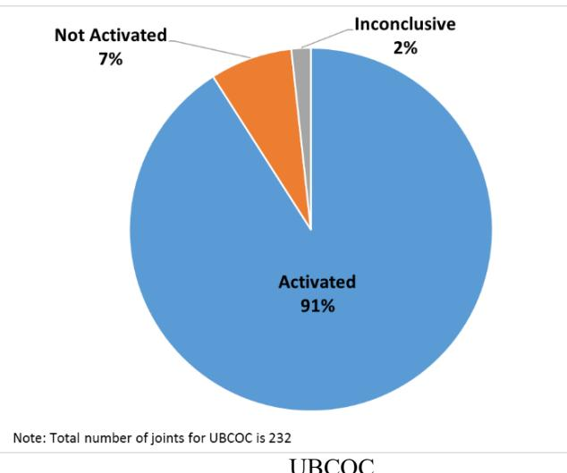
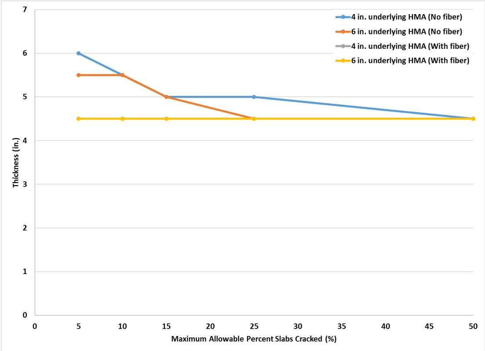
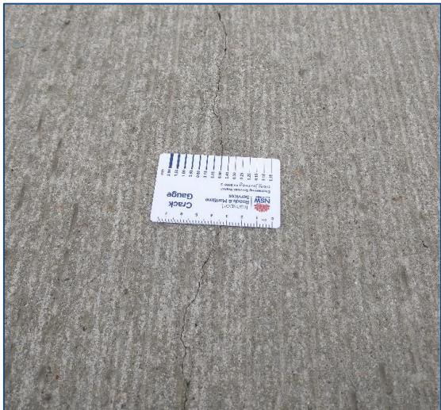
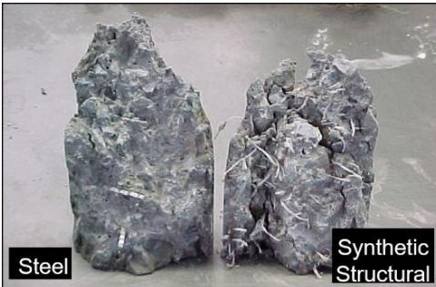
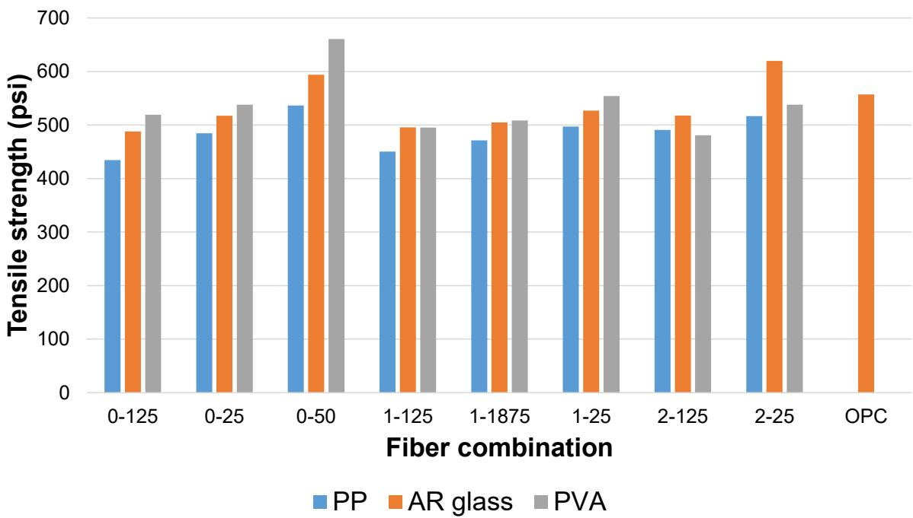
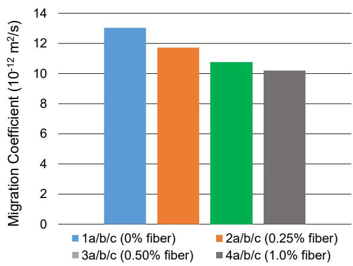
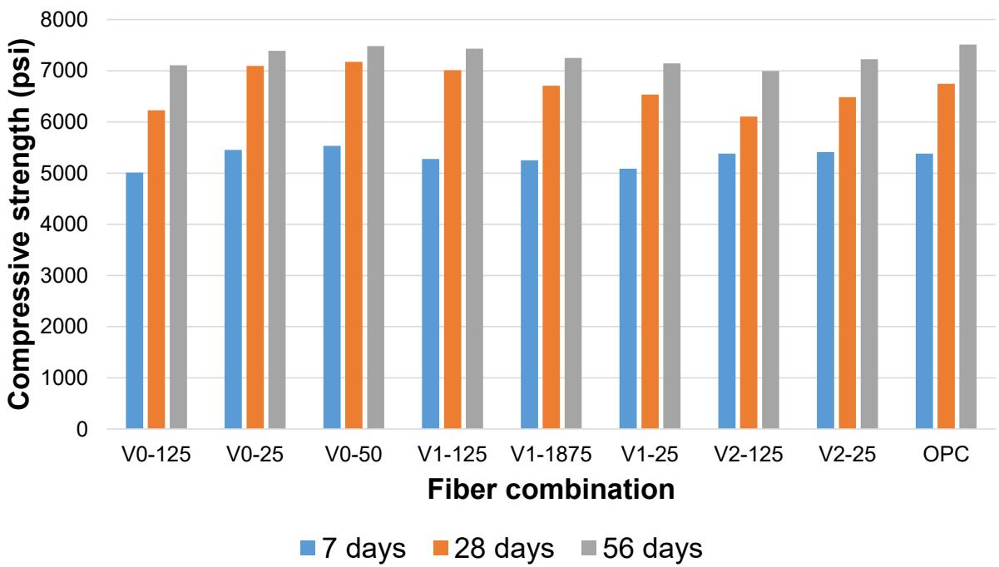
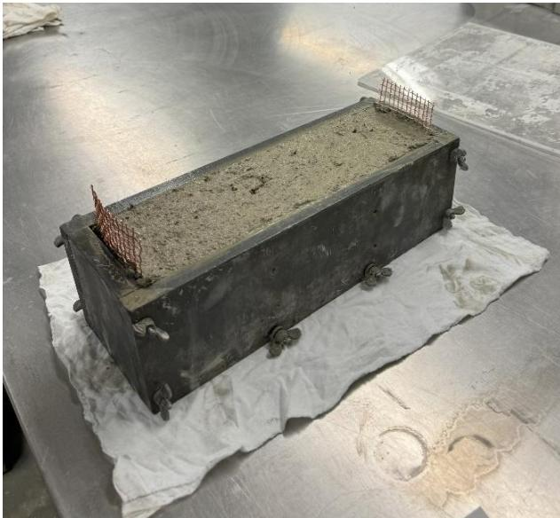
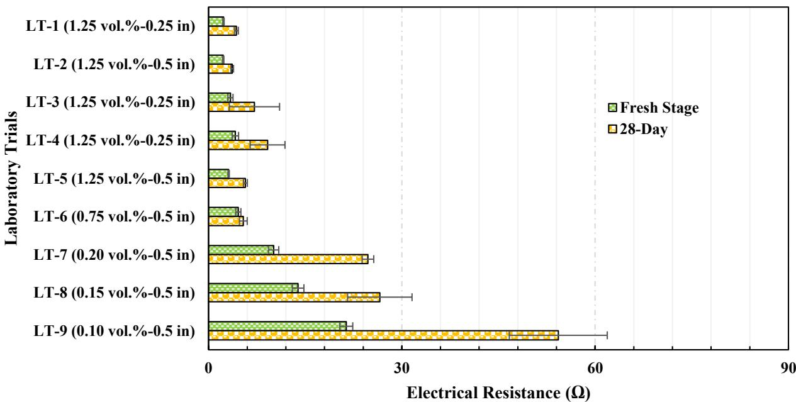

Fiber-Reinforced Concrete
Fiber-reinforced concrete is a cementitious composite material in which discrete, discontinuous fibers are uniformly dispersed throughout the matrix to modify its mechanical behavior and enhance durability. The primary mechanism of reinforcement involves the fibers bridging developing cracks within the hardened concrete, thereby limiting crack opening widths and preventing microcracks from propagating into larger pathways for aggressive agents [1] [2] [3]. By arresting crack propagation, the fiber network significantly improves the composite’s post-cracking toughness, ductility, and fatigue resistance while also mitigating early-age shrinkage cracking [1] [2] [3]. The specific performance characteristics of the composite are determined by the material properties and geometry of the fibers, which can be selected to provide benefits ranging from corrosion resistance to enhanced electrical conductivity through percolation networks [1] [2] [3] [4].
This overview of Fiber-Reinforced Concrete from CP Tech Center reports also covers the following subtopics: Alkali-Resistant Glass Fibers, Hybrid Fiber-Reinforced Concrete, Polypropylene Microfibers, Polyvinyl Alcohol Fibers, and Synthetic Fiber Reinforcement.
Fiber-Reinforced Concrete unifies diverse materials that introduce discontinuous reinforcement to improve the mechanical behavior of cementitious matrices. Alkali-Resistant Glass Fibers provide distributed tensile reinforcement within the cementitious matrix by using a zirconium dioxide-modified silica glass composition that withstands alkaline degradation, thereby enhancing post-cracking ductility and fracture resistance without requiring continuous rebar. Polyvinyl Alcohol Fibers enhance post-cracking ductility and fracture resistance by bridging microcracks within the cementitious matrix through their high tensile strength and strong bond with the alkaline environment. Synthetic Fiber Reinforcement integrates discrete polymeric fibers into the cementitious matrix to enhance post-cracking ductility and fracture resistance through distributed tensile reinforcement. Polypropylene Microfibers serve as discrete, randomly distributed synthetic filaments within the cementitious matrix to mitigate early-age plastic shrinkage cracking and enhance the composite’s toughness through improved energy absorption. Hybrid Fiber-Reinforced Concrete achieves synergistic mechanical performance by integrating two or more distinct types of discontinuous fibers within its cementitious matrix.
Sources (11)
Sub-concepts (5)
Key findings
- Synthesized hybrid mixes combining polypropylene microfibers with alkali-resistant glass macrofibers produced the best balance of pre- and post-crack performance, delivering superior compressive strength, flexural capacity, and toughness compared to single-fiber systems [1].
- Fiber reinforcement significantly reduced cracking rates in concrete overlays and enabled extended transverse joint spacings up to 40 feet by preventing mid-slab transverse cracking, whereas non-fibrous mixes suffered high distress levels at similar spacing [5].
- Fiber reinforcement did not produce measurable improvements in key structural performance metrics such as joint load transfer efficiency, ride quality (IRI), or deformation characteristics, indicating that joint geometry and support conditions remain the dominant design factors [5].
- Polypropylene microfibers excelled at early-age crack control and shrinkage mitigation, while macrofibers dominated post-crack ductility and macro-crack bridging, necessitating a hybrid approach to address both failure stages effectively [1].
- Electrically conductive concrete required precise production controls, including staged fiber addition and batch size limitations, to prevent clumping and maintain electrical resistance within design limits, with an optimal dosage identified at approximately 0.40 vol% [4].
- Substituting Portland cement with Class F fly ash improved plastic-shrinkage resistance, workability, and long-term durability in fiber-reinforced mixes, whereas expansive cement was deemed unsuitable due to increased capillary pressure outweighing crack-width reduction benefits [1].
- Fibers restricted crack width and produced thinner reflective cracks, offering secondary benefits such as improved fatigue capacity and ductility, even when they carried little load until large strains developed due to their low modulus relative to the matrix [3].
Structural Application Performance and Durability
Evidence: 8 reports (6 primary)
Research problem — The industry lacks comprehensive long-term performance data and clear design guidance that integrates structural synthetic fibers, preventing designers from reliably predicting service life or optimizing joint spacing to justify the added cost of reinforcement [2]. Engineers face uncertainty regarding whether fiber reinforcement meaningfully improves load transfer and ride quality in thin overlays, as field validations often contradict design manual expectations while construction challenges complicate practical implementation [6] [5] [7]. Reliable durability is threatened by outdated testing regimes and complex mix designs that fail to account for early-age stresses and reflective cracking from underlying structures, creating gaps in material compatibility control [8].
The figure below illustrates how these performance metrics vary across different overlay ages.
 Performance of concrete overlays based on the total database IRI and age [2]
Performance of concrete overlays based on the total database IRI and age [2]
The figure displays a scatter plot of International Roughness Index (IRI) values against pavement age, showing that ride quality generally degrades over time. A trend line indicates the average deterioration rate, while a horizontal threshold marks the upper limit for acceptable condition.
State of the art — Current practice treats fiber reinforcement primarily as a crack-mitigation measure that permits extended transverse joint spacing, typically up to 30–40 feet, rather than improving load transfer or ride quality [5] [3]. While field investigations confirm that fibers have negligible effects on load-transfer efficiency or smoothness, they enable designers to adopt longer joint spacings without mid-panel cracking while maintaining good to excellent pavement condition for three to four decades [2] [5] [3].
Findings from the reports
- Found that fiber inclusion did not produce measurable improvements in load-transfer efficiency, ride quality (IRI), or surface roughness compared to non-fibrous controls under typical overlay conditions [5] [3] [7].
- Identified a thickness-dependent performance role where fibers provided essential insurance against slab loss-of-support and multiple cracking in overlays of 4 inches or less, while being optional for thicker sections (3.5+ inches) [9] [7].
- Demonstrated that fiber reinforcement significantly reduced cracking rates and prevented mid-panel transverse cracking, enabling the use of longer joint spacings (up to 30–40 ft) without compromising structural integrity [5].
- Observed that durability parameters such as permeability and mix density were controlled primarily by cement content and compaction effort rather than by the addition of fibers [8].
- Revealed that while fibers restricted crack width and offered secondary benefits like improved ductility, their low modulus meant they carried little load until large strains developed, limiting impact on joint activation behavior [3].
- Showed that inter-panel cracking manifested at the longest joints in fiber-reinforced slabs, indicating that joint spacing and load transfer details remain critical design considerations despite crack mitigation benefits [8].
Novelty & rigor — The research introduces a comprehensive, multi-site field evaluation framework that integrates ultrasonic shear-wave tomography, falling-weight deflectometer testing, and high-speed inertial profiling to assess the structural performance of fiber-reinforced concrete overlays under real-world conditions [5]. A distinctive methodological contribution is the application of a slab-length-to-relative-stiffness ratio as a design metric for predicting joint activation, which allows for the systematic evaluation of trade-offs between crack control and joint timing across varying fiber dosages and overlay thicknesses [3]. The study advances the field by validating three-dimensional finite-element models that utilize contact elements to simulate layer interfaces, providing a reproducible analytical approach for predicting stress distribution and deflection in composite pavement systems incorporating discrete synthetic fibers [6] [10].
The following figure illustrates how joint activation varies across different concrete overlay types.

Pie chart showing the percentage of joints activated for different concrete overlay types. [3]This data supports the finding that higher overlay thickness led to increased joint activation.
Reported values
| Parameter | Value | Context | Source |
|---|---|---|---|
| deflection | 0.00347 inches | composite pavement after adding the two lugs | [6] |
| deflection | 0.00765 inches | composite pavement before adding the two lugs | [6] |
| deflection reduction | 60 percent% | composite pavement after adding the two 5-foot-widened sections | [6] |
| joint length | 18.3-meter | polyolefin fiber section joints | [8] |
| joint length | 60-foot | polyolefin fiber section joints | [8] |
| average backcalculated effective thickness | 10.0 in. | of these sections | [5] |
| average backcalculated effective thickness | 8.03 in. | at Site 6 | [5] |
| design overlay thickness | 6 in. | at Site 6 | [5] |
| fiber dosage | 4 lb/yd3 | Fiber-reinforcement in concrete overlay | [3] |
| load transfer threshold | 70% | adequate load transfer criterion for FWD testing | [9] |
| overlay depth | 3–4.5 inch | PCC overlay sections with poly fibers | [9] |
| overlay depth threshold | 3.5 inches | fiber inclusion optional vs required for performance reliability | [9] |
| faulting range | -0.04 to +0.05 in. | 3.5 in. overlay mix with type A fibers | [7] |
| overlay depth | 3.5 in. | minimum thickness for building without fiber inclusion | [7] |
| overlay depth | 4 in. | maximum thickness where fibers provide insurance against loss-of-support and multiple cracking | [7] |
12 more distinct values omitted here; the full span-verified set is in the quantities sidecar.
The following figure illustrates how predicted overlay thickness varies with the maximum allowable percentage of cracked slabs for 12-foot joint spacing concrete overlays.

Predicted concrete overlay thickness versus maximum allowable percentage of cracked slabs for various underlying HMA configurations. [3]The data indicates that the inclusion of fibers in the overlay significantly reduces the required thickness to maintain structural integrity under cracking conditions, as evidenced by the lower thickness values for the ‘With fiber’ series compared to the ‘No fiber’ series.
Across the reviewed reports, fiber reinforcement consistently demonstrates superior performance in mitigating transverse and reflective cracking compared to plain concrete, enabling longer joint spacings without inducing mid-panel fractures. Conversely, multiple field evaluations indicate that the inclusion of synthetic fibers does not significantly alter primary structural metrics such as load-transfer efficiency, ride quality (IRI), or joint activation rates relative to non-fibrous controls. While durability parameters like permeability remain governed by mix design rather than fiber content, the material serves as a complementary crack-control strategy that allows for more flexible joint spacing designs without compromising overall pavement smoothness or load transfer. [8] [5] [3] [7]
The visual evidence below illustrates this crack-mitigation effect by comparing reflective cracking patterns between unreinforced and fiber-reinforced concrete sections.

A close-up view of a reflective crack in concrete pavement with a crack gauge placed across it for measurement. [3]The image displays a longitudinal fracture running through the surface of a cementitious composite, which is being measured using a specialized card labeled as a “Crack Gauge”.
Implications — Designers should treat fiber reinforcement as a secondary measure for durability and crack mitigation rather than a substitute for adequate bonding, proper base preparation, or sufficient slab depth [7]. Fiber content cannot be used to optimize joint spacing or improve early-age load transfer efficiency; instead, reliable performance requires controlling slab geometry and ensuring thorough surface preparation [5] [3]. The addition of fibers serves as a risk-mitigation tool that expands the feasible envelope for ultrathin overlays by enhancing fatigue capacity and ductility, thereby permitting larger panel sizes without degrading structural integrity [3] [9].
The following figure illustrates these design benefits.
 Design benefits of using FRC [5]
Design benefits of using FRC [5]
The figure illustrates a flowchart where the addition of macro-fibers leads to smaller crack widths and reduced crack deterioration rates. These improvements allow for either a thinner slab for the same fatigue performance or longer fatigue performance overall.
Limitations — Field evaluations have shown that adding fibers to thin overlays does not consistently reduce distress indicators, with results sometimes compromised by data anomalies and operational handling issues such as fiber clumping [7]. The mechanical contribution of synthetic macro-fibers is restricted by their low modulus, which delays activation until substantial strain occurs, thereby limiting their primary effect to crack-width control rather than influencing joint behavior [3]. Current performance assessments are constrained by narrow early-age observations, limited traffic loading, and low fiber dosages over short service periods, leaving the long-term efficacy and benefits at higher contents unresolved [5] [3].
Hybridization and Multi-Fiber Reinforcement Strategies
Evidence: 5 reports (2 primary)
Hybridization in fiber-reinforced concrete involves combining distinct fiber types to leverage their complementary mechanical properties, addressing the limitations of single-fiber systems. This strategy typically pairs fibers with different elastic moduli and bond characteristics, such as high-modulus steel or glass fibers for initial crack resistance alongside low-modulus synthetic polymers for post-cracking ductility [2] [3]. The underlying mechanism relies on the synergistic bridging of both microcracks and macrocracks, where different fiber geometries and materials manage early-age shrinkage and late-stage toughness simultaneously [1] [3].
The following figure illustrates the structural fibers used in these hybrid systems.

Comparison of steel and synthetic structural fibers in concrete specimens. [2]The image displays two concrete prisms side-by-side, labeled ‘Steel’ on the left and ‘Synthetic Structural’ on the right. Both specimens exhibit significant cracking, but the specimen containing synthetic fibers shows a higher density of exposed fiber ends protruding from the fracture surface compared to the steel fiber specimen.
Research problem — Researchers seek to understand how hybrid fiber strategies can effectively mitigate restrained shrinkage-induced cracking, which threatens the durability and service life of concrete pavements [11]. There is a need to determine how multi-fiber reinforcement mechanisms can bridge early-age plastic shrinkage cracks in high surface-area-to-volume structures like bridge decks, thereby preventing pathways for corrosive agents and sudden brittle failure [1].
The figure below illustrates how this cracking potential evolves over time in restrained concrete.
 Shrinkage stress-to-tensile strength ratio (cracking potential) of restrained concrete rings with time. [11]
Shrinkage stress-to-tensile strength ratio (cracking potential) of restrained concrete rings with time. [11]
The cracking potential value of NH mixture was very close to MI mixture, but did not crack. This difference is attributed to fiber reinforcement in the NH mixture, which mitigates restrained shrinkage-induced cracking.
State of the art — Current practice treats hybrid fiber-reinforced concrete as an engineered composite where designers combine high-aspect-ratio microfibers for early-age shrinkage control with longer macrofibers to provide post-cracking ductility, aiming for synergistic improvements in tensile strength and flexural toughness [1]. To maintain acceptable workability while achieving these mechanical gains, the field typically limits polymer microfiber dosages to approximately 0.125% by volume and often supplements the mix with pozzolanic materials like fly ash to enhance dimensional stability [1]. Ongoing research is focused on optimizing fiber surface treatments, multi-scale geometry, and mix sequencing to ensure hybrid systems deliver desired post-peak toughness without compromising workability or cost in shrinkage-sensitive applications [1].
The figure below illustrates the splitting tensile strengths achieved in hybrid fiber-reinforced concrete mixes incorporating polypropylene, AR glass, and PVA macrofibers.

Splitting tensile strengths of hybrid FRC with PP, AR glass, and PVA macrofibers [1]The figure displays a bar chart comparing the splitting tensile strength (psi) of various fiber combinations against an OPC control sample. It illustrates how hybrid FRC mixtures containing polypropylene, alkali-resistant glass, and polyvinyl-alcohol fibers perform relative to each other across different dosage levels. The data demonstrates that while many fiber combinations exhibit lower tensile strength than the control, specific macrofiber dosages can significantly enhance performance.
Findings from the reports
- Demonstrated that fiber reinforcement effectively mitigates early-age shrinkage cracking in restrained concrete mixes, allowing specific formulations to remain crack-free despite high cracking potential [11].
- Established that the tensile capacity of fiber-reinforced concrete relies on a random, discontinuous network where effectiveness is dictated by fiber geometry, stiffness relative to the matrix, and bond chemistry [1].
- Showed that microfibers excel at early-age crack control and shrinkage mitigation, while macrofibers dominate post-crack ductility and macro-crack bridging, necessitating a hybrid approach for optimal performance [1].
- Identified that polypropylene microfibers are the most influential polymeric reinforcement for reducing cracking potential and chloride ingress, but higher dosages yield diminishing returns and increase water demand [1].
- Revealed that hybrid mixes combining alkali-resistant glass macrofibers with polypropylene microfibers delivered the best balance of pre-peak compressive strength, flexural performance, and post-peak toughness [1].
- Found that substituting Portland cement with Class F fly ash improved plastic-shrinkage resistance and workability, whereas Type K expansive cement was rejected due to accelerated capillary pressure despite reducing early-age tensile strain [1].
- Observed that polyvinyl alcohol fibers reduced workability and lowered compressive strength relative to the control, making them less suitable for optimal bridge-deck mixes compared to other fiber types [1].
Novelty & rigor — The research introduces a systematic three-stage experimental framework that uniquely tailors binder chemistry, fiber type, and dosage to simultaneously address crack-bridging, tensile performance, chloride resistance, and constructability constraints in bridge-deck concrete [1]. Methodological novelty is achieved by coupling digital image correlation with a non-intrusive chalk-based speckle pattern to monitor surface strain without impeding natural evaporation, alongside continuous capillary-pressure sensor measurements during slab drying [1]. Reproducibility is ensured through detailed protocols for mix design, high-energy mixing sequences, and standardized testing regimes that allow reliable replication of mechanical and durability results across multiple fiber types [1] [8].
Reported values
| Parameter | Value | Context | Source |
|---|---|---|---|
| fiber dosage | 1.0% | PP microfiber by volume | [1] |
| maximum tensile strain reduction | 29.0% | addition of 7.5% Type K cement | [1] |
| mean chloride penetration depth decrease | 15.2% | PP microfiber proportions of 0.50% | [1] |
| mean chloride penetration depth decrease | 19.1% | PP microfiber proportions of 1.0% | [1] |
| mean chloride penetration depth decrease | 7.9% | PP microfiber proportions of 0.25% | [1] |
| PP microfiber dosage | 0.25% | by volume | [1] |
| reduction in maximum tensile strain | 29.0% | from Specimen 0K to Specimen 7.5K with addition of 7.5% Type K cement | [1] |
| Type K expansive cement replacement | 7.5% | by mass (implied by context of cement substitution) | [1] |
| cracking time | 7 days | Michigan mixture | [11] |
The following figure illustrates the rapid chloride migration test results regarding mean chloride penetration depth and migration coefficient.

Migration coefficient results for concrete mixes with varying polypropylene microfiber dosages. [1]The results show relatively consistent decreases as PP microfiber proportion increases from 0.0% to 1.0%, indicating that increasing the microfiber content decreases the migration coefficient of a mix. This reduction in chloride ion migration demonstrates how discrete fibers dispersed throughout the matrix enhance durability by limiting pathways for aggressive agents.
Implications — Designers should prioritize supplementary cementitious materials like Class F fly ash over expansive cements to ensure dimensional stability and workability in hybrid systems [1]. Specifiers must limit polypropylene microfiber dosages to low percentages to avoid excessive water demand, while pairing them with macrofibers like alkali-resistant glass to achieve necessary post-peak toughness [1]. Future development of multi-fiber strategies should focus on optimizing binder chemistry and fiber synergy rather than relying on single-fiber solutions for durability and ductility [1].
Limitations — The addition of fine microfibers significantly reduces fresh-mix workability, often requiring chemical admixtures or higher water content to maintain flow [1]. Practical fiber dosages are constrained by diminishing tensile-strength returns and increased water demand at higher volumes [1]. Different macrofiber materials exhibit variable impacts on compressive strength, with some types reducing it while others maintain baseline performance [1].
The figure below illustrates how compressive strength varies in hybrid fiber-reinforced concrete containing PVA macrofibers.

Compressive strength of hybrid FRC with PVA macrofibers [1]It illustrates how discrete fibers are dispersed throughout the matrix to modify mechanical behavior, specifically showing that PP macrofibers generally reduce compressive strength while PVA microfibers mitigate this reduction in hybrid mixes. The data demonstrates that increasing the volume of AR glass macrofibers has a negative effect on compressive strength, to the extent that specific mixes experience a decrease compared to control samples.
Specialized Functional Applications: Electrical Conductivity
Evidence: 1 report (1 primary)
Incorporating conductive fibers, such as carbon or steel, transforms fiber-reinforced concrete into a functional material capable of conducting electricity [4]. Electrical conduction occurs through percolation networks where fibers physically touch to form continuous paths, or via tunneling effects where electrons jump between closely spaced fibers under an electric field [4]. This inherent electrical resistance allows the concrete to generate heat when voltage is applied, enabling specialized applications like de-icing pavements [4].
Research problem — Research must address the significant discrepancy between laboratory-designed electrical resistance and the much higher resistance observed in field-produced mixes for electrically heated pavements [4]. Investigations are needed to understand how prolonged mixing degrades carbon fibers, leading to dramatic increases in electrical resistance that threaten heating performance [4]. Studies must determine how inevitable cracking and the ingress of meltwater or salt create unintended conductive paths that raise surface voltages above safety limits [4].
State of the art — Current consensus mandates low-voltage operation with a 24 VAC ungrounded supply to ensure safety below NEC/UL limits, coupled with immediate fresh-stage resistance monitoring and routine post-placement checks to manage risks from cracking [4].
Findings from the reports
- Demonstrated that modest dosages of short carbon fibers transform ordinary concrete into an electrically conductive matrix suitable for heated pavements, provided fiber dosage and placement are carefully managed [4].
- Established that precise production controls, including two-stage onsite addition and limiting batch sizes, prevent fiber clumping and maintain electrical resistance within design limits [4].
- Produced a statistical model with high correlation that predicts long-term electrical resistance from fresh-stage measurements, offering a practical quality-control tool for production [4].
Novelty & rigor — The research establishes the first integrated production-to-field workflow that transitions carbon-fiber reinforced concrete from laboratory demonstration to practical deployment as an electrically heated pavement system [4]. Methodological rigor is achieved through a staged on-site mixing protocol and fresh-stage electrical resistance screening, which together ensure uniform conductive network formation and allow for the statistical prediction of long-term resistivity [4]. The approach uniquely re-conceptualizes fiber reinforcement as a controllable production variable rather than a static material attribute, integrating low-voltage electrical safety directly into the mix design and quality-control framework [4].
The following figure illustrates the electrical performance of trial samples produced at a ready-mixed concrete plant.
 Electrical resistance measurements of ready mixed concrete plant trial samples at fresh and 28-day stages. [4]
Electrical resistance measurements of ready mixed concrete plant trial samples at fresh and 28-day stages. [4]
The figure displays a horizontal bar chart comparing the electrical resistance of various concrete mixtures containing carbon fibers, categorized by specific volume percentages and plant trials. Data is presented for two distinct time points: the fresh stage immediately after mixing and the 28-day stage after curing. The results demonstrate that electrical resistance decreases as carbon fiber dosage increases, eventually stabilizing at higher dosages where a conductive network is established.
Reported values
| Parameter | Value | Context | Source |
|---|---|---|---|
| 28-day electrical resistance | 12 ℧ | 14 in. by 4 in. by 4 in. beam with copper mesh electrodes | [4] |
| batch size limit | 6 yd3 | ready mix truck mixer load | [4] |
| electrical resistance | 10 and 20 ℧ | IHRB Project TR-789 at 28 days | [4] |
| electrode supply voltage | 24 VAC | ECON heated transportation infrastructure systems operation | [4] |
| fiber dosage | 0.40 vol.% | IHRB Project TR-789 ECON production | [4] |
| fiber dosage | 12.2 lb/yd³ | IHRB Project TR-789 ECON production | [4] |
| fiber length | 0.5 in. | carbon fibers recommended for optimal conductivity | [4] |
| fiber volume fraction | 0.4 vol.% | carbon fiber used in mix | [4] |
| fresh-stage electrical resistance | 5.0 Ω | samples taken immediately after production at Plant-1 | [4] |
| fresh-stage electrical resistance | 8 ℧ | 14 in. by 4 in. by 4 in. beam with copper mesh electrodes | [4] |
| power consumption | 40 W/ft2 | slab with 24 VAC applied | [4] |
| surface voltage threshold (wet environments) | 15 VAC | scenario S1 and scenario S3 with 2 in. crack | [4] |
The following figure illustrates the laboratory-scale production process and sample collection methods used to generate these experimental results.

(a) ECON production using laboratory-scale drum mixer and (b) ECON sample collection at Portland Cement Concrete Research Laboratory, Iowa State University [4]The image displays a rectangular concrete beam specimen cast in a metal mold, resting on a white cloth.
Implications — Designers must establish target electrical resistance values early in the process to determine electrode geometry and ensure energy efficiency, treating electrical performance as a primary driver alongside mechanical strength [4]. Manufacturing protocols require strict controls on fiber dosage and batch size limits to prevent clumping and maintain uniform dispersion, ensuring the material achieves the necessary conductivity window without compromising durability [4]. Long-term viability depends on selecting noncorrosive fibers like carbon fiber and implementing rigorous quality control through fresh-stage resistance testing to comply with electrical safety codes [4].
The following figure illustrates the electrical performance of laboratory trial samples.

Electrical resistance of laboratory trial samples at fresh and 28-day stages. [4]The figure displays a bar chart comparing the electrical resistance of various concrete mixtures containing discrete fibers, categorized by volume percentage and fiber length. Results demonstrated an inverse relationship between carbon fiber dosage and electrical resistance, with lower resistance values observed at higher dosages.
Limitations — Field-produced electrically conductive concrete often exhibits significantly higher electrical resistance than laboratory mixes due to fiber degradation during prolonged mixing and transit, which shifts the percolation threshold beyond design targets [4]. The absence of specific regulatory criteria for electrically conductive concrete in transportation infrastructure creates uncertainty regarding safety limits and quality-control protocols [4]. Practical deployment is constrained by strict handling requirements to prevent fiber balling, necessitating fresh-stage resistance verification before acceptance to ensure compliance with electrical shock hazard limits [4].
Related concepts
In this hierarchy
- Parent: Concrete Materials & Mixtures
- Child: Alkali-Resistant Glass Fibers
- Child: Hybrid Fiber-Reinforced Concrete
- Child: Polypropylene Microfibers
- Child: Polyvinyl Alcohol Fibers
- Child: Synthetic Fiber Reinforcement
Related by shared evidence
- Concrete Overlay — shares 8 reports
- Thin Whitetopping — shares 8 reports
- Concrete Pavement Joint — shares 7 reports
- Synthetic Fiber Reinforcement — shares 7 reports
- Transverse Cracking — shares 7 reports
- Unbonded Concrete Overlay — shares 7 reports
- Composite Pavement — shares 6 reports
- Concrete Materials & Mixtures — shares 6 reports
Similar topics
- Synthetic Fiber Reinforcement
- Concrete Overlay
- Thin Whitetopping
- Polypropylene Microfibers
- Joint Spacing Effects on Performance
- Concrete Materials & Mixtures
- Unbonded Concrete Overlay on Concrete (UBCOC)
- Unbonded Concrete Overlay
References
- B. Shafei, P. Taylor, B. Phares, and M. Kazemian, "Fiber-Reinforced Concrete for Bridge Decks," Bridge Engineering Center, Iowa State University, Ames, IA, Rep. TR-767, 2021. [Online]. Available: https://www.intrans.iastate.edu/wp-content/uploads/2021/12/fiber-reinforced_concrete_in_bridge_decks_w_cvr.pdf
- J. Gross, D. King, D. Harrington, H. Ceylan, Y. A. Chen, S. Kim, P. Taylor, and O. Kaya, "Concrete Overlay Performance on Iowa's Roadways (Field Data Report)," National Concrete Pavement Technology Center, Ames, IA, Rep. TR-698, 2017. [Online]. Available: https://www.intrans.iastate.edu/wp-content/uploads/2017/09/Iowa_concrete_overlay_performance_w_cvr.pdf
- J. Gross, D. King, H. Ceylan, Y. A. Chen, and P. Taylor, "Optimized Joint Spacing for Concrete Overlays with and without Structural Fiber Reinforcement," National Concrete Pavement Technology Center, Ames, IA, Rep. TR-698, 2019. [Online]. Available: https://www.intrans.iastate.edu/wp-content/uploads/2019/06/optimized_joint_spacing_for_overlays_w_cvr.pdf
- M. L. Rahman, H. Ceylan, S. Kim, P. C. Taylor, and D. King, "Advancing Electrically Heated Pavements for Sustainable Winter Maintenance," PROSPER and National Concrete Pavement Technology Center, Iowa State University, Ames, IA, Rep. HR-3049, 2024. [Online]. Available: https://www.intrans.iastate.edu/wp-content/uploads/2025/03/electrically_heated_pavements_for_sustainable_winter_maintenance_w_cvr.pdf
- D. King, B. Yang, P. Taylor, and H. Ceylan, "Field Performance of Fiber-Reinforced Concrete Overlays," Institute for Transportation, Iowa State University, Ames, IA, Rep. TR-816, 2025. [Online]. Available: https://www.intrans.iastate.edu/wp-content/uploads/2025/05/field_performance_of_frc_overlays_w_cvr.pdf
- J. K. Cable, M. L. Anthony, F. S. Fanous, and B. M. Phares, "Evaluation of Composite Pavement Unbonded Overlays: Phases I and II," Center for Portland Cement Concrete Pavement Technology, Iowa State University, Ames, IA, Rep. TR-478, 2003. [Online]. Available: https://www.intrans.iastate.edu/research/completed/evaluation-of-composite-pavement-unbonded-overlays-phase-iii-tr-478-hr-1093-proj-2/
- J. K. Cable, J. L. Morud, and T. R. Tabbert, "Evaluation of Composite Pavement Unbonded Overlays: Phase III," CTRE, Iowa State University, Ames, IA, Rep. TR-478, 2006. [Online]. Available: https://rosap.ntl.bts.gov/view/dot/24065
- J. Grove, G. Fick, T. Rupnow, and F. Bektas, "Material and Construction Optimization for Prevention of Premature Pavement Distress in PCC Pavements," National Concrete Pavement Technology Center, Ames, IA, Rep. TPF-5(066), 2008. [Online]. Available: https://www.intrans.iastate.edu/wp-content/uploads/2018/03/mco-final.pdf
- J. K. Cable and J. Williams, "Evaluation of Unbonded Ultrathin Whitetopping of Brick Streets," CTRE, Iowa State University, Ames, IA, Rep. TR-466, 2006. [Online]. Available: https://www.intrans.iastate.edu/wp-content/uploads/2018/03/whitetopping.pdf
- J. K. Cable, F. S. Fanous, H. Ceylan, D. Wood, D. Frentress, T. Tabbert, S. Y. Oh, and K. Gopalakrishnan, "Design and Construction Procedures for Concrete Overlay and Widening of Existing Pavements," Center for Portland Cement Concrete Pavement Technology, Iowa State University, Ames, IA, Rep. TR-511, 2005. [Online]. Available: https://www.intrans.iastate.edu/wp-content/uploads/2018/03/oreo_design.pdf
- P. Taylor, P. Tikalsky, K. Wang, G. Fick, and X. Wang, "Development of Performance Properties of Ternary Mixtures: Field Demonstrations and Project Summary," National Concrete Pavement Technology Center, Ames, IA, Rep. TPF-5(117), 2012. [Online]. Available: https://www.intrans.iastate.edu/wp-content/uploads/2018/03/ternary_final_w_cvr.pdf
Feedback on this page